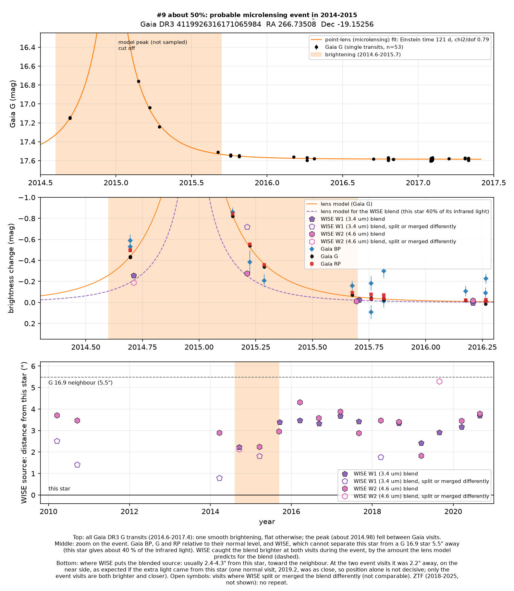
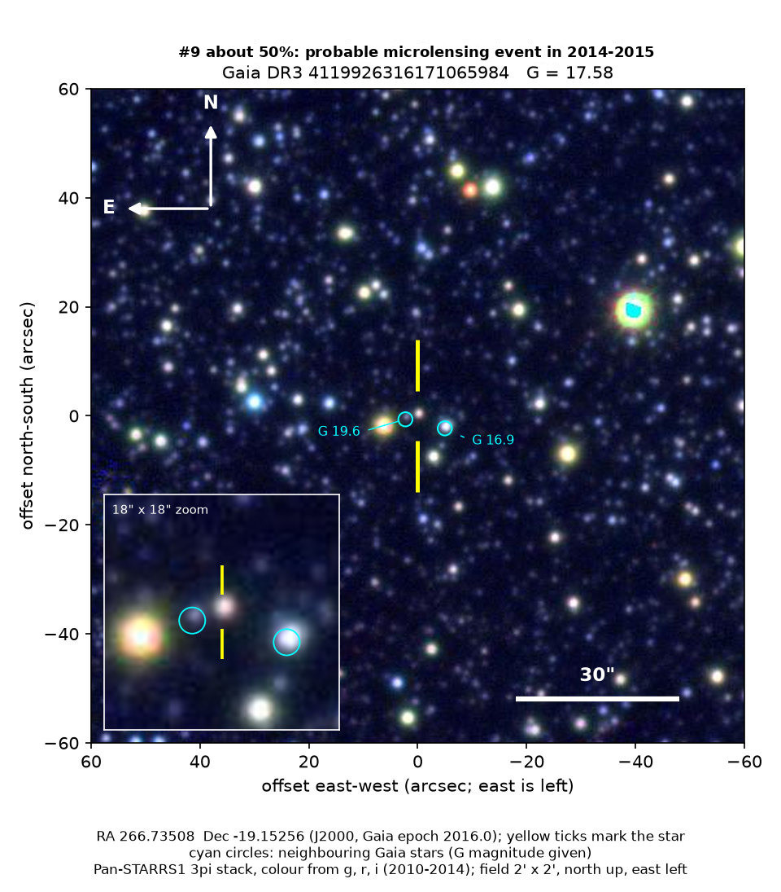

Professor of Mathematics
Paata Ivanisvili
Department of Mathematics, University of California, Irvine

Candidate 9: a star in the direction of the Galactic bulge that brightened at least two-fold
Why this estimate. WISE recorded a brightening of the size that the lensing model predicts, and the infrared position shifted towards this star. But in this crowded field the size of that brightening depends on how the blended light is split between the star and its neighbour, and Gaia never observed the peak.
How to read the pictures. The finder chart shows a patch of sky two arcminutes across, about a fifteenth of the Moon’s width, with north up and east to the left. The star sits between the two yellow ticks, and the white bar is 30 arcseconds long. On a light curve the vertical axis is magnitude, a brightness scale on which larger numbers mean fainter stars, and it is drawn so that down means fainter. Orange shading marks the change. Each survey uses slightly different filters, so each is compared with its own normal level.
Dates such as 2016.22 are written as a year plus a fraction of a year: 2016.00 is the start of 2016, and 2016.50 is about halfway through it.

What changed. This is a star in Sagittarius, 4.8 degrees above the mid-plane of the Milky Way and about 10 degrees from the Galactic centre. It is far away, with a parallax too small to measure, and it is reddened by dust. The field is crowded: five other Gaia stars lie within 6 arcseconds. When Gaia’s measurements began, in September 2014, the star was already 0.44 magnitudes brighter than normal. At 2015.15 it was 0.83 magnitudes brighter, 2.1 times the light. Then it faded: it was 0.55 magnitudes brighter at 2015.22 and 0.34 at 2015.29, and it was back to normal by mid-2015. It stayed steady until Gaia’s published data end, at 2017.3, and ZTF saw nothing from 2018 to 2025. Gaia’s blue, green and red bands brightened by the same amount. The peak itself fell in a gap between Gaia visits around the turn of 2014 and 2015, so the maximum brightness is unknown.
WISE cannot separate this star from a brighter neighbour 5.5 arcseconds away (Gaia G = 16.9, circled on the finder chart), so it measures the pair as one blurred source. Judging from where WISE places that blend, normally about 3.4 arcseconds from this star in the direction of the neighbour, this star gives about 40 per cent of its infrared light. WISE visited twice during the event, in September 2014 and March 2015. Both times the blended source was 0.18 to 0.26 magnitudes brighter than on every comparable visit from 2010 to 2020, visits that agree with one another to within 0.04 to 0.08 magnitudes, and the blend sat closer to this star, at 2.2 arcseconds. That is what should happen if this star brightened by the factor Gaia measured, and the lensing model predicts 0.19 to 0.24 magnitudes for the blend. Position alone would not be decisive, because one ordinary visit in 2019 also placed the source close to this star, but only the two visits during the event are both brighter and shifted.
Why it might matter. A foreground star passing almost exactly in front of a distant star focuses its light, so the distant star brightens and fades once, smoothly, and by the same factor in every colour. Here the standard lensing model fits all 53 Gaia measurements more closely than a plain bump does. The Gaia colours and the infrared agree, and nothing similar shows in WISE, Gaia or ZTF from 2010 to 2025. Gaia’s classifier labelled it as microlensing.
The event may be new. It is not in Gaia’s published list of 363 microlensing events, it has no Gaia alert, and it has no entry in SIMBAD, VSX (the variable-star index) or the Transient Name Server. Nothing about it appears on arXiv either. The star lies outside the fields of the OGLE early-warning system, and KMTNet, which began full operations in 2016, did not list it. It is not in OGLE’s list of events in the Galactic disc (Mroz et al. 2020), and it sits just outside OGLE’s nearest disc fields. Microlensing is an expected kind of event, not an exotic one.
One worry is that Gaia’s brightness measurements rise and fall with one of Gaia’s image-quality indicators, which in a field this crowded could mean a measurement artefact caused by the neighbours. A real brightening among close neighbours can produce the same correlation, however, and the WISE result shows that the change in light was real and came from this star’s position.
- Star
- Gaia DR3 4119926316171065984
- Location
- RA 266.73508°, Dec −19.15256° (J2000), in Sagittarius
- Distance
- parallax too small to measure; the star is reddened by dust
- Brightness
- Gaia G = 17.6
- Probability
- This candidate is unconfirmed. The percentage under the title is an estimate of the chance that it is a real, previously unrecorded case of the kind described. The estimate has not been checked by outside experts. See the introduction to all twelve candidates.
- Caveat
- The peak was not observed, so the maximum brightness and the lens parameters are uncertain. The size of the WISE brightening depends on how WISE splits the blend, and on one visit, in the 3.4-micron band in March 2015, it split the blend differently. No public optical survey imaged this field during the event: the NOIRLab Dark Energy Camera archive, SkyMapper and ZTF have no data from those months. WISE’s images are too blurry, with a resolution of about 6 arcseconds, to show the star separately.
